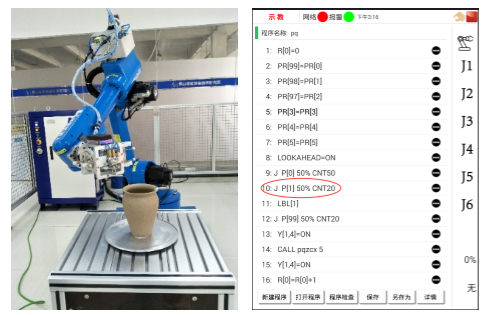

4.2喷漆示教编程
4.2.7喷漆示教
编写完程序后，需对程序中的位置数据进行赋值或者示教。首先在手动模式下设置工具坐标系和工件坐标系为我们标定的工具坐标系和工件坐标系。例如如果我们标定的工具坐标系为工具1，工件坐标系为工件1，则将其分别设置为工具1和工件1，如图4-8。图4-8 设置工具坐标系和工件坐标系
1. 对PR[3]、PR[4]、PR[5]数据进行设定。
将PR[3]位置数据中Z设置为-15.000mm，如图4-9所示。
图4-9 设置PR[3]的数据
将PR[4]位置数据中Z设置为60.000mm，如图4-10所示。
图4-10 设置PR[4]的数据
将PR[5]位置数据中E1设置为90.000，如图4-11所示。
图4-11 设置PR[5]的数据
2. 示教目标点。
手动移动机器人到目标点位置，并记录该位置。本程序中需要示教的目标点有机器人零位、工作过渡点、喷涂轨迹开始点，喷涂轨迹中间点，喷涂轨迹终点。
图4-12 机器人零位

图4-13 工作过渡点
图4-14 喷涂开始点
图4-15 喷涂轨迹中间点
图4-16 喷涂轨迹终点
视频 4-2 喷涂示教